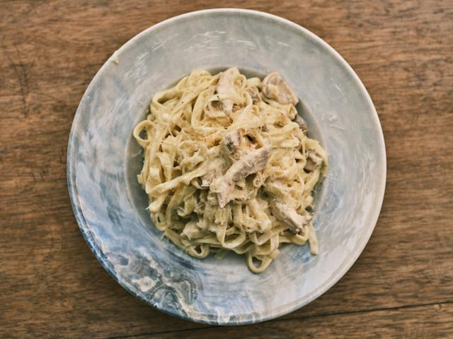

Fettuccine Alfredo

Description
Here's a classic Fettuccine Alfredo recipe
Ingredients
- 8 oz (about 225g) fettuccine pasta
- 1/2 cup (1 stick) unsalted butter
- 1 cup heavy cream
- 1 cup grated Parmesan cheese
- Salt and pepper, to taste
- Optional: Chopped parsley for garnish
Steps
- Cook the fettuccine pasta according to the package instructions. Drain and set aside.
- In a large skillet, melt the butter over medium heat.
- Pour in the heavy cream and bring it to a simmer. Reduce the heat to low.
- Gradually whisk in the grated Parmesan cheese until the sauce is smooth and well combined.
- Season the Alfredo sauce with salt and pepper to taste. Keep in mind that Parmesan cheese is already salty, so adjust accordingly.
- Add the cooked fettuccine to the skillet and toss until the pasta is well coated with the Alfredo sauce.
- Cook for an additional 2-3 minutes, allowing the pasta to absorb the flavors.
- If desired, garnish with chopped parsley.